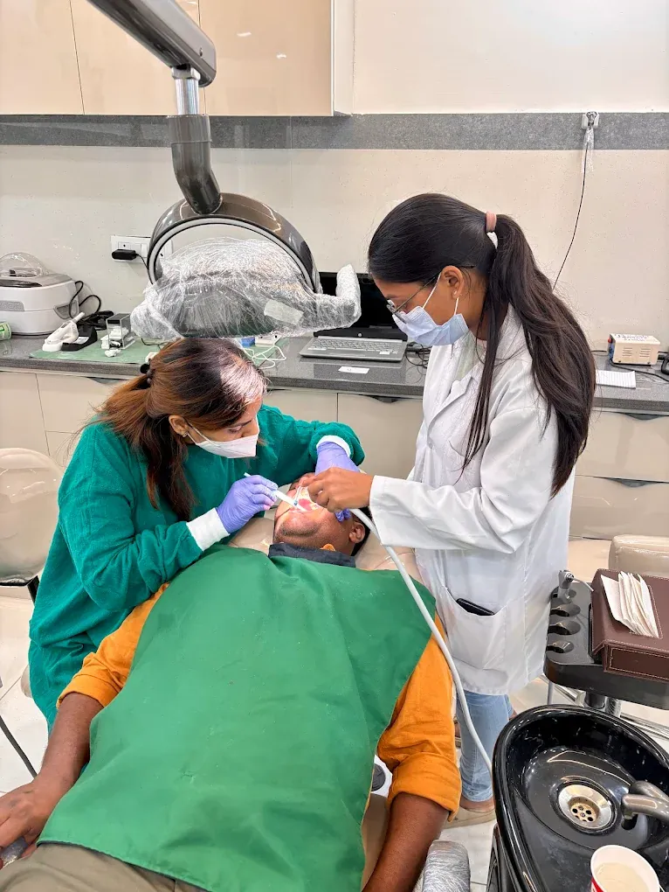

Oil pulling — swishing edible oil around the mouth for several minutes — comes from Ayurvedic practice, where it is known as kavala or gandusha. It is widely used across India, and patients often ask whether it is worth continuing. The fair answer sits between the two loud positions.
What the research supports
Several small trials, many conducted in India, have compared oil pulling with chlorhexidine rinse and with no rinse. The reasonably consistent findings are modest but real:
- A reduction in plaque scores and in gingival inflammation over two to four weeks, compared with no rinsing at all.
- A reduction in oral bacterial counts, including Streptococcus mutans, the main organism implicated in decay.
- Improvement in bad breath, comparable in some studies to chlorhexidine.
The honest caveats: most trials are small, short, conducted on young healthy volunteers, and few are blinded well. Chlorhexidine generally still performed as well or better. And the studies compared oil pulling against no rinse, not against proper brushing and flossing.
A plausible mechanism exists. Oils have a saponification effect and can emulsify and lift the lipid membranes of bacteria, and the mechanical swishing itself dislodges debris.
What it does not do
This is where the claims run well ahead of the evidence. Oil pulling does not:
- Reverse cavities. Once enamel has cavitated, nothing swished in the mouth rebuilds it.
- Cure gum disease. It cannot remove hardened calculus below the gumline, which requires instruments.
- Whiten teeth in any meaningful way. It may lift some surface film; it does not change the intrinsic shade.
- Detoxify the body, pull toxins through the tongue, or treat systemic disease. There is no evidence for any of this.
- Replace brushing. It is not a substitute for fluoride.
If you want to do it
It is safe for most people. Use about a tablespoon of coconut or sesame oil, swish gently for five to twenty minutes, and do it before brushing rather than instead of it. Two practical warnings: spit it into a bin, never the sink, because oil solidifies and blocks drains; and never swallow it, since it now carries the bacteria and debris you have just loosened.
Stop if your jaw aches — twenty minutes of swishing is a genuine workout for the jaw muscles, and we do occasionally see jaw pain from enthusiastic oil pulling. Do not do it if you are prone to inhaling liquids, and supervise or avoid it in young children entirely, because aspirating oil into the lungs causes a serious pneumonia.
The reasonable conclusion
Oil pulling is a harmless adjunct with modest measurable benefit for plaque and breath. As an addition to brushing, flossing and regular cleanings, it is fine. As a replacement for them, or as a treatment for existing decay or gum disease, it will let you down — and the time spent believing otherwise is time the underlying problem keeps progressing.
Frequently asked questions
Does oil pulling cure cavities?
No. Once enamel has broken down into a cavity, the tooth cannot rebuild it and nothing swished in the mouth will. Early white-spot demineralisation can remineralise, but that needs fluoride, not oil.
Is coconut oil or sesame oil better for oil pulling?
Both have been studied with broadly similar results. Sesame is traditional in Ayurvedic practice; coconut contains lauric acid and is more palatable to most people. Neither is clearly superior.
Can oil pulling replace brushing?
No. It provides no fluoride and cannot mechanically disrupt plaque the way a brush does. Use it before brushing as an addition, never as a substitute.
Is oil pulling safe?
For most adults, yes. Spit into a bin rather than the sink to avoid blocked drains, never swallow the oil, and avoid it in young children because inhaling oil can cause a serious pneumonia.
Talk to a dentist in Dehradun
A reasonable adjunct, but not a treatment for decay or gum disease. If you would like this looked at, it is what we do every day at Vital Dental Care & Implant Center, Haripuram Colony, 2 GMS Road, Engineers Enclave, Kanwali, Dehradun, Uttarakhand 248001 — close to Ballupur Chowk, Prem Nagar, Clement Town and Rajpur Road.
- Consulting hoursSunday to Friday, 10:00–14:00 and 16:00–20:00. Closed Saturday.
- Treating dentistDr. Pragati Singh, B.D.S., M.D.S. — Endodontist
- Appointments92868 98353 or WhatsApp
Related: Choosing a mouthwash, stages of tooth decay, bleeding gums.